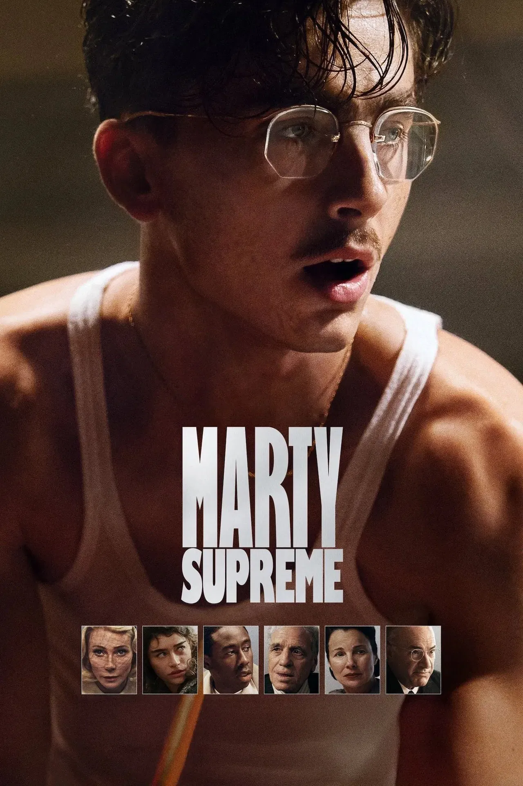

98th Annual Academy Awards
Melhor Seleção de Elenco
Conheça os candidatos à Premiação do Oscar 2026 por Melhor Seleção de Elenco.

Vencedor
Uma Batalha Após a Outra
Destaque do Grupo: A dinâmica entre Leonardo DiCaprio e Sean Penn. A crítica destaca que o elenco parece operar em uma sintonia caótica e vibrante, onde até os papéis menores (como os de Regina Hall e Teyana Taylor) possuem momentos de brilho absoluto.
Por que merece: Pela capacidade de Anderson em extrair performances naturais de grandes nomes, criando uma sensação de "comunidade viva" em um cenário de crime e política.

O Agente Secreto
Destaque do Grupo: A parceria entre Wagner Moura e Maria Fernanda Cândido. O elenco de apoio, composto por grandes nomes do teatro e cinema nacional, é elogiado por construir uma atmosfera de paranoia constante, onde cada olhar carrega o peso do segredo.
Por que merece: Pela precisão do elenco em transmitir a tensão política sem a necessidade de grandes explosões dramáticas, mantendo o público preso à narrativa através da contenção emocional.

Pecadores (Sinners)
Destaque do Grupo: O magnetismo de Michael B. Jordan em papel duplo, apoiado pela gravidade de Delroy Lindo e pela intensidade de Wunmi Mosaku.
Por que merece: O elenco é fundamental para "vender" o sobrenatural. Eles tratam os elementos de horror com uma seriedade dramática que eleva o filme, criando uma conexão emocional real com o destino daquela comunidade.

Hamnet: A Vida Antes de Hamlet
Destaque do Grupo: A química devastadora entre Jessie Buckley e Paul Mescal. O elenco infantil, que interpreta os filhos do casal, também foi amplamente aclamado pela naturalidade e pelo impacto no arco emocional do filme.
Por que merece: Pela intimidade. É um elenco que trabalha no detalhe, no toque e no silêncio, conseguindo retratar o luto de uma forma que parece quase documental e profundamente pessoal.

Marty Supreme
Destaque do Grupo: O carisma de Timothée Chalamet cercado por um elenco de apoio improvável e brilhante, incluindo Gwyneth Paltrow, Odessa A’zion e a estreia magnética de Tyler, The Creator.
Por que merece: Pelo frescor. Josh Safdie criou um conjunto que transborda energia e "atitude". A interação entre atores de diferentes origens (cinema clássico, indie e música) resulta em uma dinâmica elétrica e imprevisível na tela.